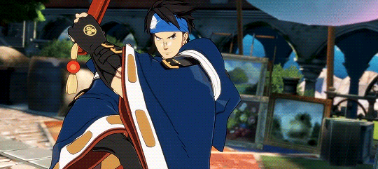

Following the destruction of Japan at the hands of the gears, which would instigate the gear wars, the remnants of the nation and its citizens would be placed under tight protection and control by the government in numerous small colonies. Anji is a Japanese descendant who went against the strict limits put on him, and with a great curiosity set out for the outside world. Armed with his fan weapons, he is a competent fighter who uses dance techniques to defeat his opponents. Over time, he would come to align himself with whomever he sees as interesting, even the infamous being known as "That Man". Following past encounters and changing sides, he currently now works for president Chipp Zanuff.
